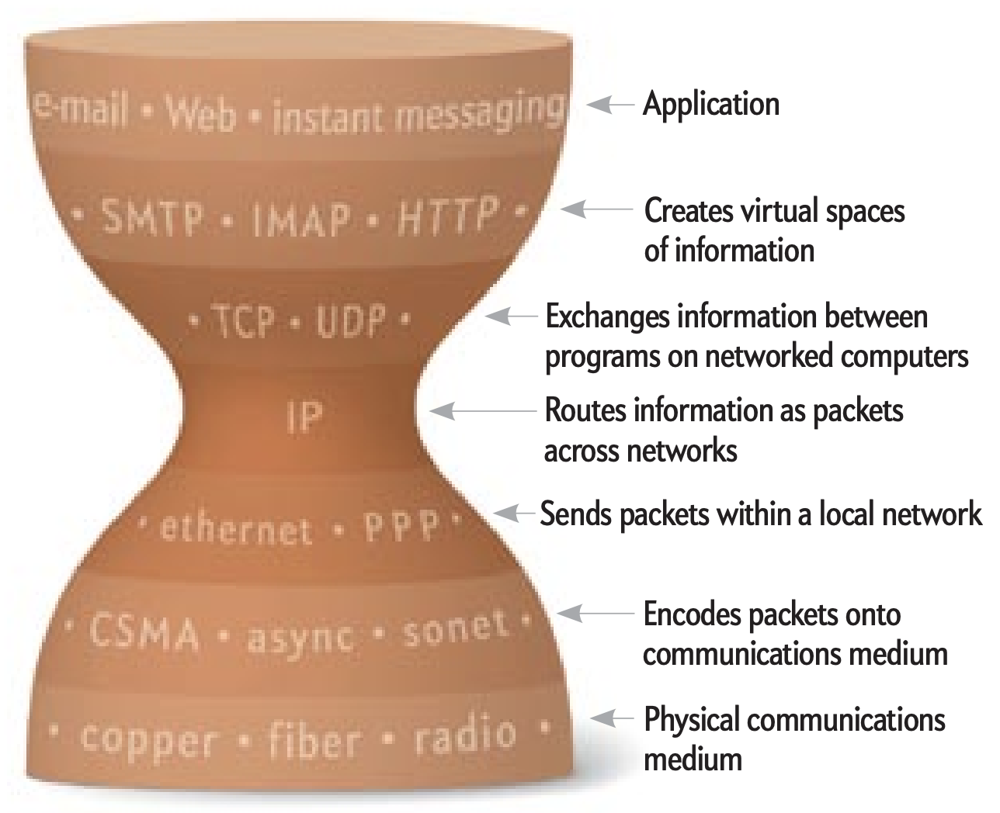
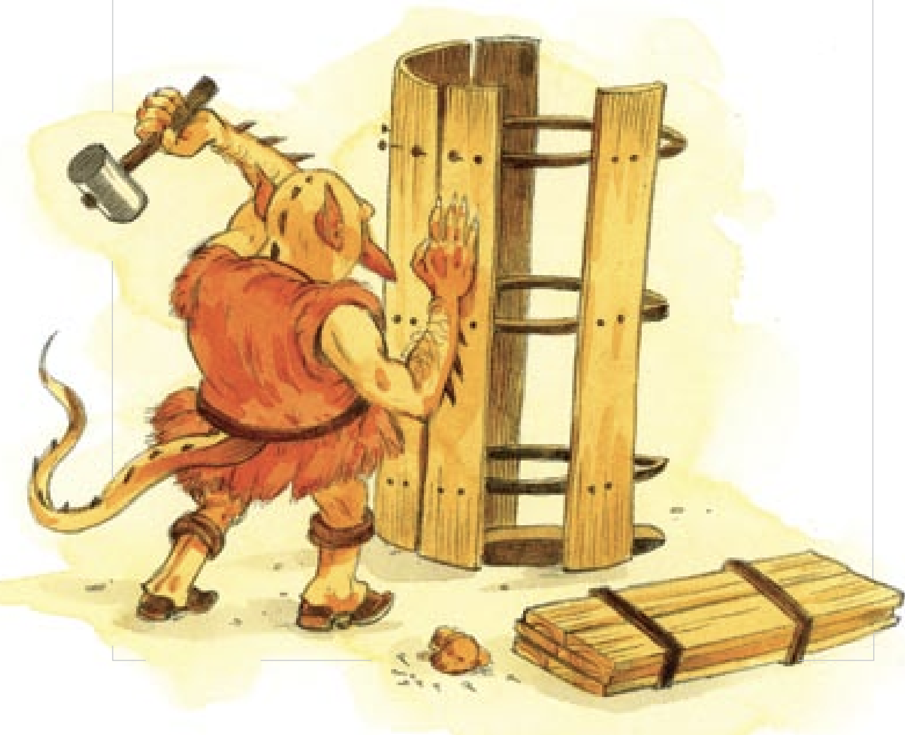

In the digital age, few figures command the kind of reverence and
respect that Sir Tim Berners-Lee does, and for good reason. As the
visionary who conceptualized and birthed the World Wide Web, Berners-Lee
has provided the world with an invaluable gift: the possibility of true
global connection. "Long Live the Web" is a testament not just to the
historical significance of the Web, but to its future potential.

One of the article's central themes is the importance of an open web.
Berners-Lee's passion for a free and unregulated Internet echoes
throughout the piece, underscoring the myriad of ways in which the Web
enriches society. From fostering innovation and creativity to breaking
down barriers and promoting inclusivity, the open web stands as a beacon
of democratic ideals in the digital age.

Yet, "Long Live the Web" is not merely a celebratory ode to the
Internet's triumphs. Berners-Lee wisely delves into the potential
challenges and threats to the Web's open nature. The looming dangers of
centralized control, governmental censorship, and commercial interests
are addressed with a sense of urgency, reminding readers of the
collective responsibility to safeguard the Web's integrity.

What struck me most profoundly is Berners-Lee's unwavering faith in the
potential of the Web. While he acknowledges its vulnerabilities, he is
convinced that with careful stewardship, the Web can continue to evolve
in ways that benefit humanity at large. His optimism is grounded in a
clear understanding of the transformative power of connectivity. In an
era marked by divisiveness and discord, the Web, as envisioned by
Berners-Lee, can be the unifying thread that binds us together.

In conclusion, "Long Live the Web" is a compelling call to action—a
reminder that while the Web has come a long way, its journey is far from
over. It is up to us, as users and stakeholders, to shape its path
forward. Berners-Lee's vision is of a Web that is ever-evolving,
inclusive, and beneficial for all. As we stand on the cusp of further
technological advancements, we would do well to heed his wisdom and
ensure that the Web remains a tool for positive change.